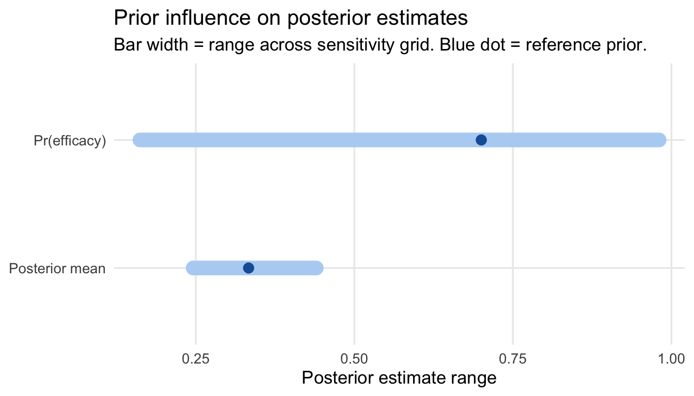
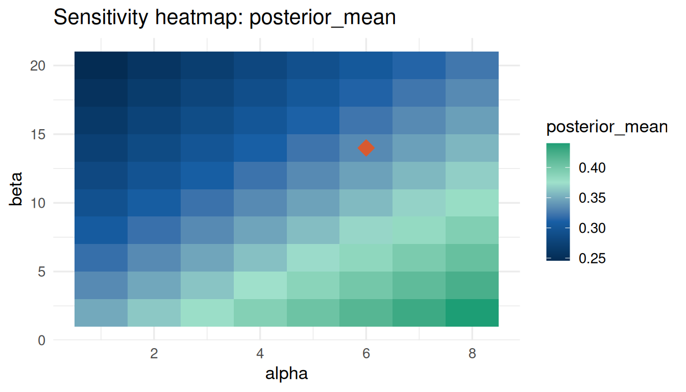
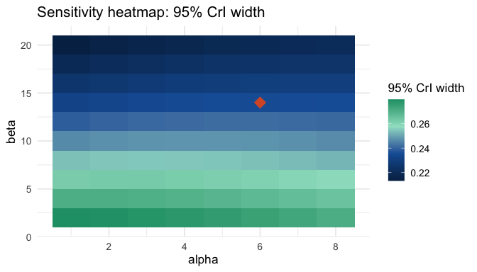
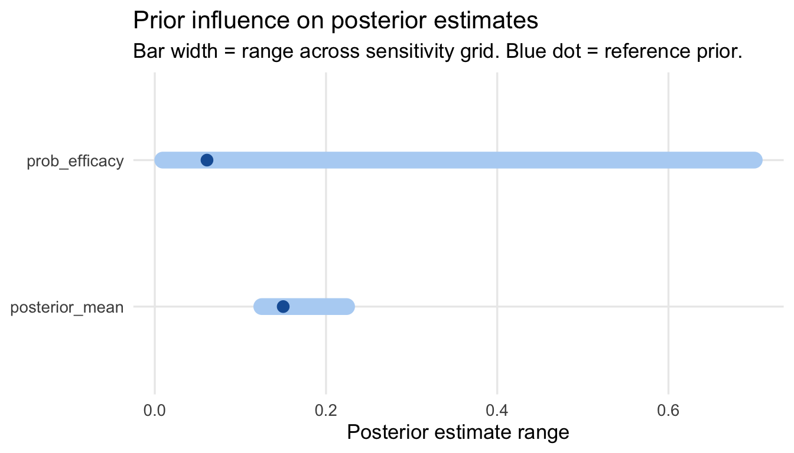
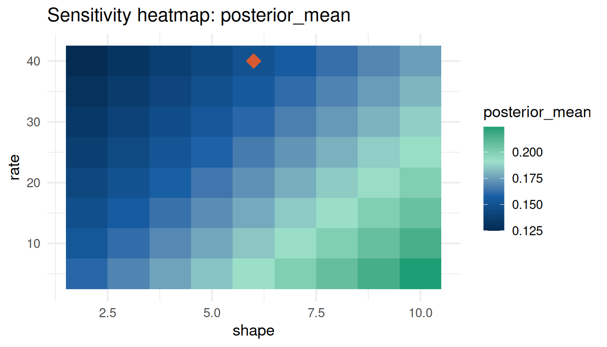
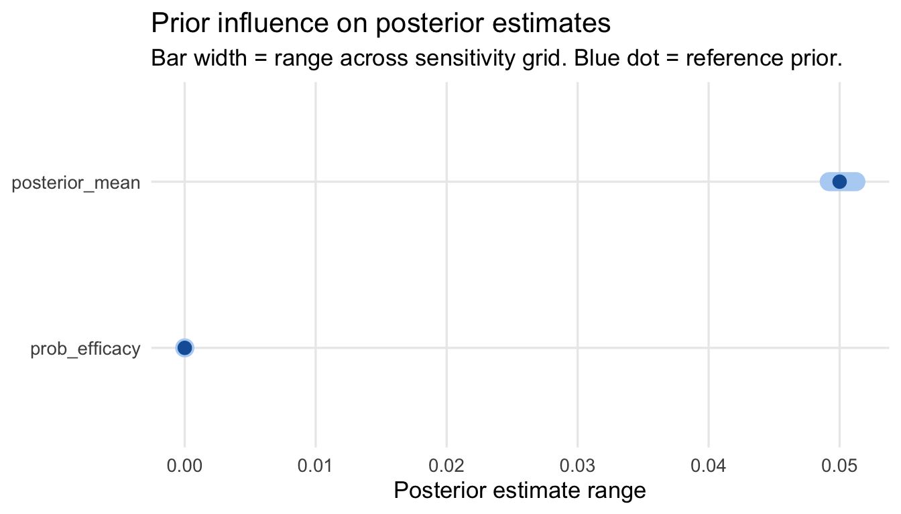
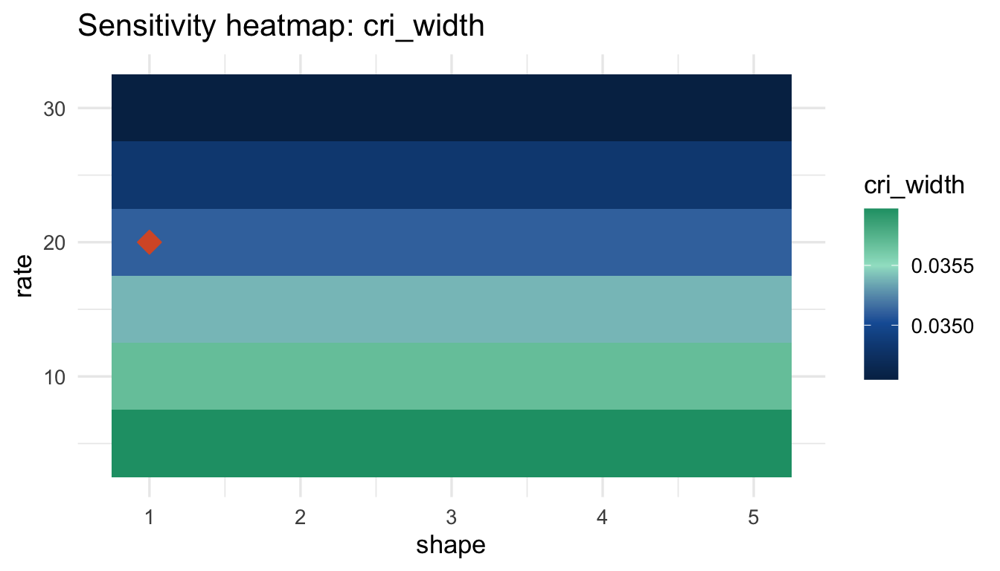
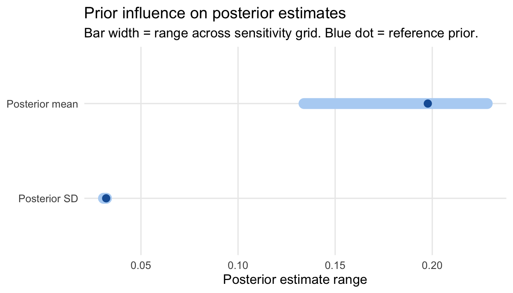
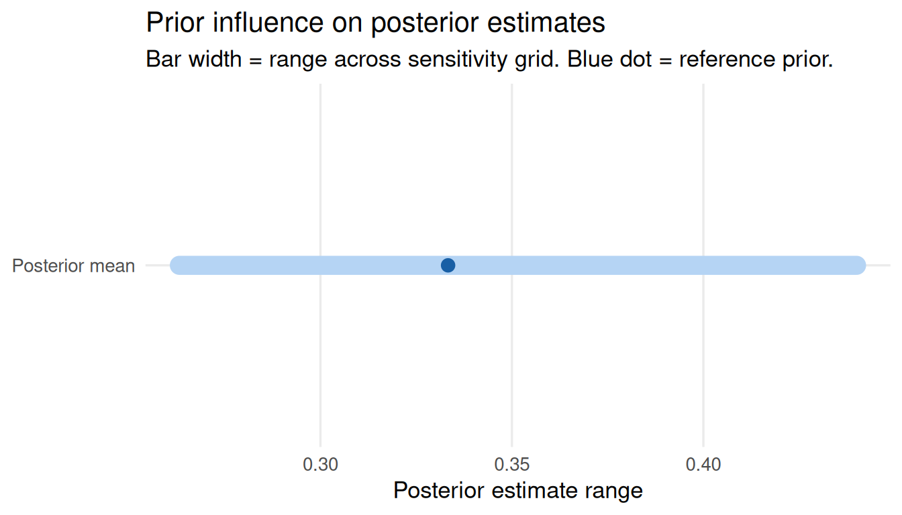

prior <- elicit_beta(mean = 0.30, sd = 0.10, method = "moments",
label = "Response rate")
data_obs <- list(type = "binary", x = 14, n = 40)Sensitivity Analysis
Why Sensitivity Analysis Is Required
The FDA’s 2026 draft guidance, Use of Bayesian Methodology in Clinical Trials of Drug and Biological Products, calls for sensitivity analyses that demonstrate trial conclusions are robust to plausible variations in prior specification.
bayprior provides two dedicated functions:
sensitivity_grid()— evaluates posterior mean, SD, and efficacy probabilitysensitivity_cri()— focuses on credible interval width and bounds
Sensitivity analysis is fully independent of conflict diagnostics. You can run it without first running
prior_conflict()by supplyingdata_summarydirectly.
Supported Data Types
type = |
Conjugate update | param_grid names |
|---|---|---|
"binary" |
Beta-Binomial | alpha, beta |
"continuous" |
Normal-Normal | mu, sigma |
"poisson" |
Gamma-Poisson | shape, rate |
"survival" |
Gamma-Exponential | shape, rate |
Binary Data
sa <- sensitivity_grid(
prior = prior,
data_summary = data_obs,
param_grid = list(alpha = seq(1, 8, 1), beta = seq(2, 20, 2)),
target = c("posterior_mean", "prob_efficacy"),
threshold = 0.30
)
sa$influence_scoresposterior_mean prob_efficacy
0.1940984 0.8184416 plot_tornado(sa)
plot_sensitivity(sa, target = "posterior_mean")
Credible Interval Sensitivity
cri_sa <- sensitivity_cri(
prior = prior,
data_summary = data_obs,
param_grid = list(alpha = seq(1, 8, 1), beta = seq(2, 20, 2)),
cri_level = 0.95
)
cri_sa$influence_scores cri_lower cri_upper cri_width posterior_mean posterior_sd
0.15946768 0.21751316 0.06678301 0.19409836 0.01716165 plot_sensitivity(cri_sa, target = "cri_width")
Poisson / Count Data
Sensitivity with Poisson data uses Gamma-Poisson conjugate updating.
prior_ae <- elicit_gamma(mean = 0.15, sd = 0.06, method = "moments",
label = "AE rate (per person-year)")
data_pois <- list(type = "poisson", x = 18, n = 120)
sa_pois <- sensitivity_grid(
prior = prior_ae,
data_summary = data_pois,
param_grid = list(shape = seq(2, 10, 1), rate = seq(5, 40, 5)),
target = c("posterior_mean", "prob_efficacy"),
threshold = 0.20
)
sa_pois$influence_scoresposterior_mean prob_efficacy
0.0990000 0.6908443 plot_tornado(sa_pois)
plot_sensitivity(sa_pois, target = "posterior_mean")
Survival / Time-to-Event Data
Sensitivity with survival data uses Gamma-Exponential conjugate updating.
prior_hz <- elicit_exponential(mean = 0.05, method = "moments",
label = "OS hazard rate")
data_surv <- list(type = "survival", x = 30, n = 600)
sa_surv <- sensitivity_grid(
prior = prior_hz,
data_summary = data_surv,
param_grid = list(shape = seq(1, 5, 0.5), rate = seq(5, 30, 5)),
target = c("posterior_mean", "prob_efficacy"),
threshold = 0.10
)
sa_surv$influence_scoresposterior_mean prob_efficacy
2.033320e-03 8.021621e-06 plot_tornado(sa_surv)
cri_surv <- sensitivity_cri(
prior = prior_hz,
data_summary = data_surv,
param_grid = list(shape = seq(1, 5, 0.5), rate = seq(5, 30, 5)),
cri_level = 0.95
)
plot_sensitivity(cri_surv, target = "cri_width")
Continuous Endpoints
prior_cont <- elicit_normal(mean = 0.0, sd = 0.3, method = "moments",
label = "Log odds ratio")
sa_cont <- sensitivity_grid(
prior = prior_cont,
data_summary = list(type = "continuous", x = 0.20, sd = 0.25, n = 60),
param_grid = list(mu = seq(-0.5, 0.5, 0.1), sigma = seq(0.1, 0.8, 0.1)),
target = c("posterior_mean", "posterior_sd")
)
plot_tornado(sa_cont)
Interpreting Influence Scores
| Score | Sensitivity | Implication |
|---|---|---|
| < 0.05 | Not sensitive | Prior has negligible influence |
| 0.05 – 0.15 | Moderate | Report alongside primary estimate |
| > 0.15 | Sensitive | Consider robust prior; emphasise data |
Mixture Prior Sensitivity
e1 <- elicit_beta(mean = 0.25, sd = 0.08, method = "moments",
expert_id = "E1", label = "ORR")
e2 <- elicit_beta(mean = 0.40, sd = 0.10, method = "moments",
expert_id = "E2", label = "ORR")
mix <- aggregate_experts(list(E1 = e1, E2 = e2), weights = c(0.5, 0.5))
sa_mix <- sensitivity_grid(
prior = mix,
data_summary = list(type = "binary", x = 14, n = 40),
param_grid = list(alpha = seq(1, 8, 1), beta = seq(2, 16, 2)),
target = "posterior_mean"
)
plot_tornado(sa_mix)
Note: for mixture priors, the grid varies the dominant component’s parameters. A compatibility warning is shown in the Shiny app.
Regulatory Reporting
Include in the clinical study report:
- Influence score table — one row per posterior quantity
- Tornado plot — ordered from most to least sensitive
- Heatmap — for the primary efficacy quantity
- Classification statement — sensitive / not sensitive per quantity
All three are generated automatically by prior_report() when a bayprior_sensitivity object is supplied.
References
- FDA (2026). Use of Bayesian Methodology in Clinical Trials of Drug and Biological Products (Draft Guidance for Industry).
- ICH E9(R1) (2019). Addendum on Estimands and Sensitivity Analysis.